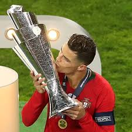

Cristiano Ronaldo
Cristiano Ronaldo is a professional soccer player who has set records while playing for the Manchester United, Real Madrid and Juventus clubs, as well as the Portuguese national team.
Who Is Cristiano Ronaldo?
Cristiano Ronaldo dos Santos Aveiro is a Portuguese soccer superstar. By 2003 — when he was just 16 years old — Manchester United paid £12 million (over $14 million U.S. dollars) to sign him, a record fee for a player of his age.
In the 2004 FA Cup final, Ronaldo scored Manchester's first three goals and helped them capture the championship. He set a franchise record for goals scored in 2008, before Real Madrid paid a record $131 million for his services the following year.
Among his many accomplishments, he has won a record-tying five Ballon d'Or awards for player of the year, and led Portugal to an emotional victory in the 2016 European Championship. In July 2018, Ronaldo embarked on a new phase of his career by signing with Italian Serie A club Juventus.
Early Life
Ronaldo was born on February 5, 1985, in Funchal, Madeira, Portugal, a small island off the western coast of the country. Ronaldo is the youngest of four children born to Maria Dolores dos Santos and José Dinis Aveiro. He was named after Ronald Reagan, one of his father's favorite actors.
Ronaldo grew up in a largely working class neighborhood in a small tin-roofed home that overlooked the ocean. Ronaldo was introduced to the game of soccer through his dad, who worked as an equipment manager at a boy's club.
His early life was shaped by hardship, as his father often drank too much. To help keep the children fed and maintain some financial stability, Ronaldo's mother worked as a cook and cleaning person.
In 2005, when Ronaldo was playing for Manchester United, his father died from alcohol-related kidney problems; in 2007, his mother struggled with breast cancer. The former was especially hard for Ronaldo since he and his dad had been close.
The young athlete had often pushed for his father to enter rehab and address his drinking. His father, however, never accepted the offer.
By the time he was 10 years old, Ronaldo was already recognized as a phenomenon — a kid who ate, slept and drank soccer. "All he wanted to do as a boy was play football," his godfather, Fernao Sousa, recalled for British reporters, adding, "He loved the game so much he'd miss meals or escape out of his bedroom window with a ball when he was supposed to be doing his homework."
By his early teens, Ronaldo's talent and legend had grown considerably. After a stint with Nacional da liha da Madeira, he signed with Sporting Portugal in 2001.
Soccer Career

1.Manchester United
In 2001, when Ronaldo was just 16 years old, Manchester United paid more than £12 million to sign him — a record fee for a player of his age.
Ronaldo had turned heads with a mesmerizing performance with Portugal against Manchester, wowing even his opponents with his footwork and deft skill. He made such an impression that a number of United players asked their manager to try and sign the young player, which the team soon did.
Ronaldo did not disappoint the soccer world: He showed his promise early on in the 2004 FA Cup final, scoring the team's first three goals and helping them capture the championship. In 2007, Ronaldo signed a five-year, £31 million contract.
A year later, Ronaldo again justified his high salary when he put together one of the club's finest seasons in history, setting a franchise record for goals scored (42), and earning himself the FIFA World Player of the Year honor for 2008. In all, Ronaldo helped steer Manchester United to three premier league titles.
2.Real Madrid
In 2009, the Spanish soccer club Real Madrid agreed to pay Manchester United a record $131 million for the chance to sign Ronaldo. Ronaldo’s commitment to Manchester United had come under constant question, and speculation swirled that he wanted to play elsewhere, so nobody was all that surprised to see Ronaldo leave.
"I know that they are going to demand a lot of me to be successful at the club and I know that I'm going to have much more pressure than at Manchester United because I was there for many years," Ronaldo told reporters. "But it means a new challenge and is going to help me be the best footballer."
Ronaldo went on to compile an impressive list of individual honors and team trophies. In December 2016, he won his fourth Ballon d'Or award as the sport's player of the year, beating out FC Barcelona's Lionel Messi.
Ronaldo’s 2016 wins included the European Championship, Champions League and Club World Cup, plus individual awards from UEFA and France Football magazine. The following year, he claimed a fifth Ballon d'Or to tie the mark held by his longtime rival, Messi.
3.Juventus
After dropping hints that his time with Real was coming to an end, Ronaldo confirmed the rumors in July 2018 by signing with Italian Serie A club Juventus, which paid a $140 million transfer fee to his old Spanish club.
Ronaldo paid tribute to Real fans in an open letter on the club's website, writing: "These years at Real Madrid and in this city of Madrid have quite possibly been the happiest years of my life. I only have feelings of great gratitude to this club, to the fans and to the city. I can only give thanks to all of them for the love and affection that I have received."
By most measures, Ronaldo's debut season with Juventus was a successful one. He scored 10 times in his first 14 games, and headed home the lone goal in a win over AC Milan for the Supercoppa Italiana trophy. After leading his club to its eighth consecutive Serie A title, he was named the league's MVP in May 2019.
4.Return to Manchester United
On August 27, 2021, it was announced that Ronaldo would return to Manchester United.
5.Portugal National Team
On July 10, 2016, Ronaldo added an emotional victory to his collection. As his national team's captain, Ronaldo led Portugal to the European Championship final against France.
Although he was sidelined after suffering a knee injury 25 minutes into the match, Portugal went on to win the championship title 1-0, their first international trophy. Ronaldo's teammates said that he motivated them as team captain from the sidelines.
"He gave us a lot of confidence and he said, 'Listen people, I'm sure we will win this Euro so stay together and fight for it,’” fullback Cedric Soares said after Portugal’s victory.
"This is one of the happiest moments in my career,” Ronaldo commented. ”I’ve always said I wanted to win a trophy with the national team and make history. And I did it. Thank God, things went well for us."
Ronaldo got off to a tremendous start at the 2018 World Cup, blasting home three goals in an opening draw vs. Spain, before adding another vs. Morocco to set a European record with his 85th international goal.
However, he was held scoreless in a 2-1 loss to Uruguay in the knockout stage, after which he declined to comment on his future with the national team.
Personal Life
Ronaldo is dating the Spanish model Georgina Rodriguez; the couple was first seen together publicly around November 2016.
In June 2017, the couple welcomed twins, a boy and a girl, via a surrogate. In November 2017, Rodriguez added to their family with the birth of another girl.
Ronaldo’s first child, Cristiano Jr., was born to a former girlfriend in June 2010.
Statue at the Madeira Airport
In March 2017, self-taught sculptor Emanuel Santos unveiled a bronze bust of Ronaldo at the airport in Ronaldo’s hometown of Madeira, Portugal. The statue was ridiculed for its sinister smile and apparent lack of likeness to its subject, though Santos didn't seem to understand the uproar.
"I asked [Ronaldo] what he thought of the result and he said he liked it," said Santos. "He only asked for some wrinkles that give him a certain expression to his face when he laughs to be changed. He said it made him look older and asked for it to be thinned out a bit to make it smoother and more jovial."
In the wake of the negative publicity, the sports site Bleacher Report commissioned Santos to fashion another sculpture of Ronaldo. This one, unveiled in March 2018, earned praise for more closely resembling the soccer great, though its creator continued to defend his original work.
"I liked the result [of the first bust] and was really proud of it," he told Bleacher Report. "And if I had to do it again, I would make everything exactly the same."